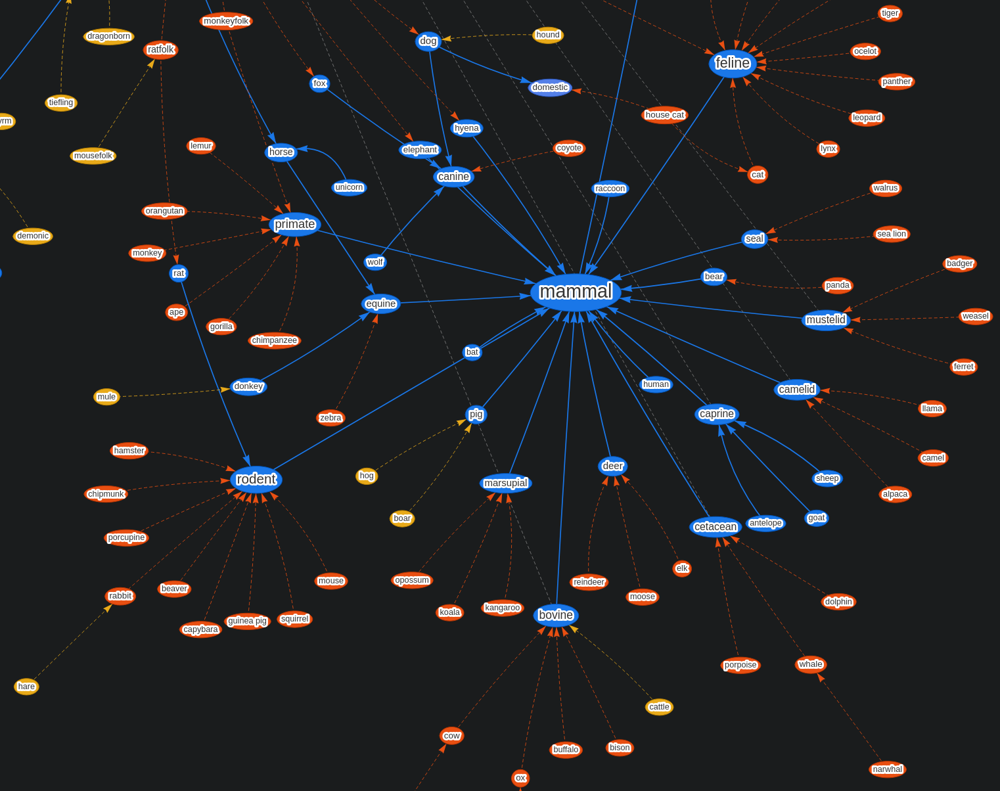
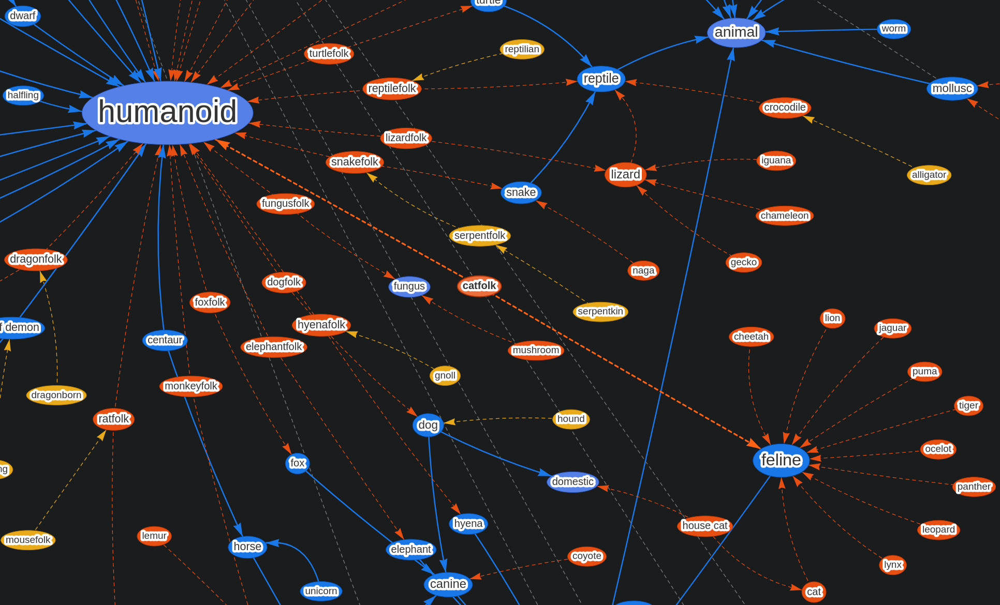
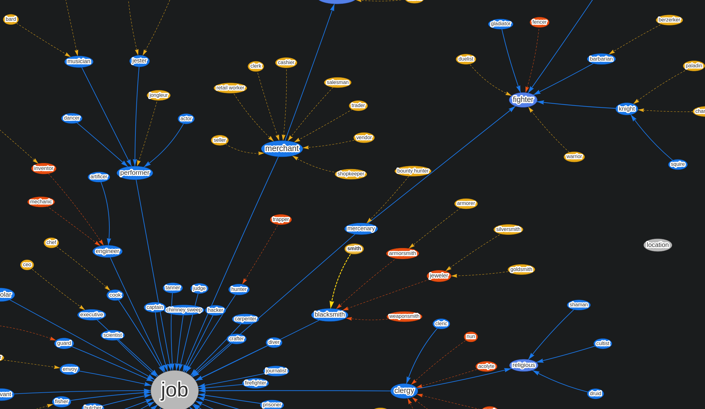
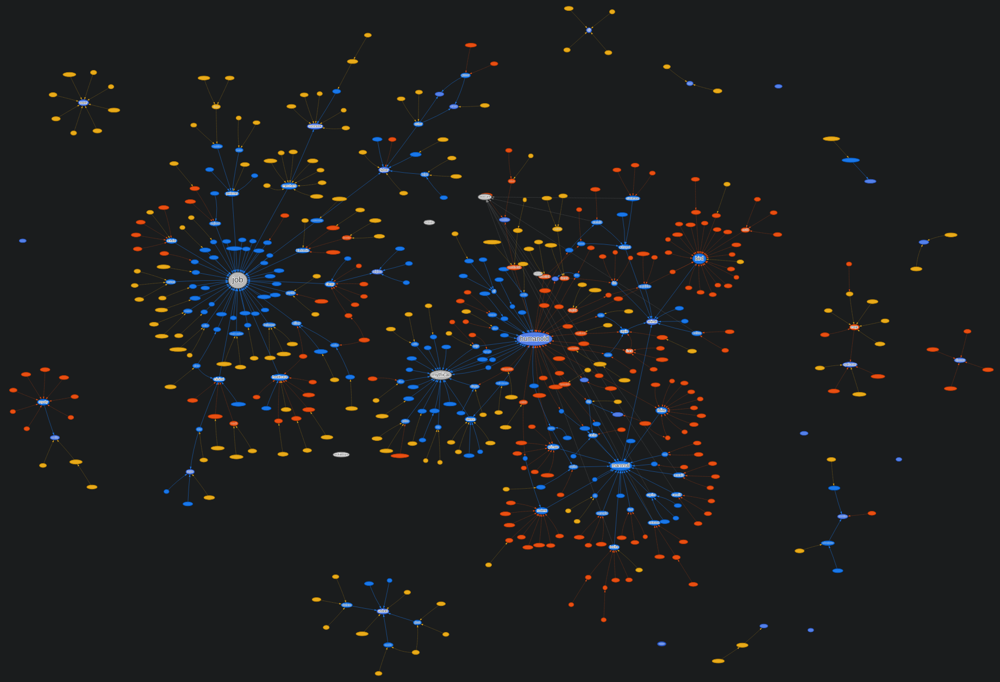

Tag Relations
In the last post, I mentioned that tags allow us to add extra information to a mini without ballooning its name. One of the examples I gave was the "Half-Elf Blacksmith" which I claimed is a bad name for a mini, which might have caught some of you off guard. In reality, while being a perfectly cromulent name, it gets messy when the name is the only way to search for something. Why, you might ask?
Imagine you want a blacksmith for your Elven village, you search for "Elf Blacksmith" and... nothing. Because we have a Half-Elf blacksmith, not an Elven one, even though a Half-Elf would visually fulfill the same role[0]. We could bodge the search implementation to try and get better results, but it's hard to improve this specific case without making others worse[1].
Tags help here: We can now add both "Half-Elf" and "Elf" tags to said blacksmith mini and can search for either of them to find it by simply directly matching the texts, which is exactly what we want.
That does however only delay the issue so that whoever makes the mini has to actually add both of those tags for this approach to work. We cannot rely on every creator getting this right every time.
This is where tag relations come in: The "Half-Elf" tag relates to the "Elf" tag in a way where if you add it, the "Elf" tag also gets added automatically[2]. This is step one in improving the odds that both our official assets and community-made ones have a consistent set of tags that people can rely on.
Synonyms
Even within the same language, humans have many different ways of naming the same thing. One person may call a container that's supposed to hold discarded and broken things "garbage bin", another person "dustbin", yet another person just "trash", and yet another ... I think you get the gist.
We don't want to add a tag for every possibility, it would have the same issue as with Half-Elf and Elf: Not everyone would add all of the different ways to call a trash can as tags, and suddenly, people won't find it with those names.
We needed an extra tool to guide people towards useful tags and part of our answer for that is synonyms.
With synonyms, we pick one of those "possible ways to call something" to be an actual tag, and all the others are "synonyms" of this (even if linguistically speaking they aren't technically 100% synonymous). While searching for that thing, you can enter any of the recognized synonyms, and the search will know to convert it to a tag TaleSpire knows and show the relevant asset[3]. We can even have synonyms resolve to multiple tags, which opens some interesting possibilities!
Example_of's
Just as we cannot have tags for every way of calling something, we can't have tags for every kind of thing either. In fact, past a certain point, ultra specific tags hurt discoverability instead of helping it. So to complement synonyms, we have "example_of's" (no, we've not found a better term for it). To players they work the same as synonyms, but don't encode quite the same idea. As an example, there are many different birds like ostriches, pheasants, geese, cranes, gulls, cuckoos, owls, storks, penguins, eagles, hawks, ... and while our search does recognize a number of those, they are all "example_of" birds - so when entering any of those words into search, TaleSpire suggest "bird". If you do require a more specific bird species, asset name matching has you covered.
To make this less abstract, here are some screenshots from our graph database - red means "example_of", orange are synonyms and blue are "true" tags. Let's start with an overview over the mammal taxonomy:

Now let's look at catfolk: It's an example_of pointing to both "human" and "feline":

Jobs were also an interesting challenge - see all the synonyms of "merchant":

And here you can see why I did zoomed-in pictures before: This is the whole tag (and synonym/example_of) set for minis:

Final result
All of the above techniques, paired with name search, deliver quite nice results:
- You can still find an eagle by searching for "eagle" (which suggests "bird", but still searches for "eagle" in the name of assets), without us needing a tag for every single species (real and fantastical) in existence.
- You can find decent stand-in assets in case the exact thing you were searching for doesn't exist: Maybe there is no eagle miniature, but there is a hawk, which is an okay stand-in and findable by the "next closest group", which is "bird".
- You can search for names and words that are familiar to you and consistently find the related assets; Both "dragonfolk" as well as "dragonborn" will correctly work for searching.
There is however one more thing I want to mention. Whenever we give any tools to all of you, we're responsible for keeping them working (potentially forever). This is no less true for tags than it is for TaleSpire's slab strings. However because synonyms and example_ofs aren't stored on the assets themselves, but are encoded and recognized in the search engine, so it is something we (Bouncyrock) can adjust and expand on more easily over time.
Obviously, on top of all of this you can also add your own custom tags[4] - I'll be talking about those some more later in this series.
And that wraps up this part. See you in the next one!
It might be that in your specific world/game setting, this is not the case, which illustrates the other issue with widely used fantasy terms: They don't always mean exactly the same thing in all games/worlds, yet TaleSpire tries to be as widely applicable to as many games as possible, so we do have to make some compromises here and there.
This might be surprising to hear for non-developers, and unfortunately, it is hard to explain concisely, but here's the run-down: To find something with the text "Elf" when you type in "Half-Elf", an obvious approach would be to split "Half" and "Elf" from the search input and check for both individually. However, this would then also match other Half-creatures (like Half-Demons, Half-Orcs, Half-...), making the search results practically useless. There are, of course, also ways to get around those issues, but the "smarter" you try to make these kinds of algorithms, the more weird edge cases you introduce and the more likely it is that those won't be fixable by even more added "smartness". This gets even trickier when we remember that we also support community-made content, so we need a system that works reliably across all possible inputs.
This can be overridden if there is a need for it - we don't envision this to happen with the Half-Elf -> Elf example, but there are many cross-connections between tags, and sometimes the relation might not always be what the artist had in mind when creating the mini.
We will, of course, also not have synonyms for every possible way to call things, that'd be the same impossible task as making all of those tags, but because synonyms aren't stored on the asset and instead are only in the search engine, we can continually update the list of available synonyms without us (or you!) needing to update each individual mini.